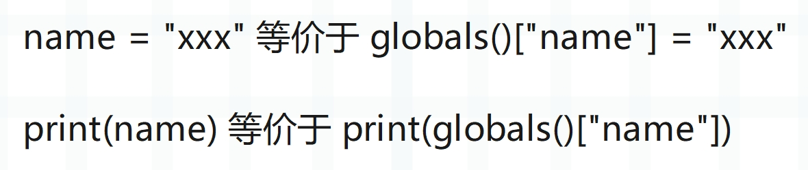

楔子
在介绍栈桢的时候，我们看到了 3 个独立的名字空间：f_locals、f_globals、f_builtins。名字空间对 Python 来说是一个非常重要的概念，虚拟机的运行机制和名字空间有着非常紧密的联系。并且在 Python 中，与名字空间这个概念紧密联系在一起的还有名字、作用域这些概念，下面我们就来剖析这些概念是如何体现的。
变量只是一个名字
在这个系列的最开始我们就说过，从解释器的角度来看，变量只是一个泛型指针 PyObject *，而从 Python 的角度来看，变量只是一个名字、或者说符号，用于和对象进行绑定的。
name = "古明地觉"
上面这个赋值语句其实就是将 name 和 "古明地觉" 绑定起来，让我们可以通过 name 这个符号找到对应的 PyUnicodeObject。因此定义一个变量，本质上就是建立名字和对象之间的映射关系。
另外我们说 Python 虽然一切皆对象，但拿到的都是指向对象的指针，因此创建函数和类，以及模块导入，同样是在完成名字和对象的绑定。
def foo(): pass
class A(): pass
创建一个函数也相当于定义一个变量，会先根据函数体创建一个函数对象，然后将名字 foo 和函数对象绑定起来。所以函数名和函数体之间是分离的，同理类也是如此。
import os
导入一个模块，也是在定义一个变量。import os 相当于将名字 os 和模块对象绑定起来，通过 os 可以找到指定的模块对象。
当我们导入一个模块的时候，解释器是这么做的。
import os 等价于 os = __import__("os")，可以看到本质上还是一个赋值语句。
import numpy as np 中的 as 语句同样是在定义变量，将名字 np 和对应的模块对象绑定起来，以后就可以通过 np 这个名字去获取指定的模块了。
总结：无论是普通的赋值语句，还是定义函数和类，亦或是模块导入，它们本质上都是在完成变量和对象的绑定。
name = "古明地觉"
def foo(): pass
class A(): pass
import os
import numpy as np
里面的 name、foo、A、os、np，都只是一个变量，或者说名字、符号，然后通过名字可以获取与之绑定的对象。
作用域和名字空间
正如上面所说，赋值语句、函数定义、类定义、模块导入，本质上只是完成了变量和对象之间的绑定，或者说我们创建了变量到对象的映射，通过变量可以获取对应的对象，而它们的容身之所就是名字空间。
所以名字空间是通过 PyDictObject 对象实现的，这对于映射来说简直再适合不过了。而前面介绍字典的时候，我们说字典是被高度优化的，原因就是虚拟机本身也重度依赖字典，从这里的名字空间即可得到体现。
当然，在一个模块内部，变量还存在可见性的问题，比如：
x = 1
def foo():
x = 2
print(x) # 2
foo()
print(x) # 1
我们看到同一个变量名，打印的确是不同的值，说明指向了不同的对象，换句话说这两个变量是在不同的名字空间中被创建的。
名字空间本质上是一个字典，如果两者在同一个名字空间，那么由于 key 的不重复性，当执行 x = 2 的时候，会把字典里面 key 为 "x" 的 value 给更新成 2。但是在外面还是打印 1，这说明两者所在的不是同一个名字空间，打印的也就自然不是同一个 x。因此对于一个模块而言，内部可以存在多个名字空间，每一个名字空间都与一个作用域相对应。作用域可以理解为一段程序的正文区域，在这个区域里面定义的变量是有意义的，然而一旦出了这个区域，就无效了。
关于作用域这个概念，我们要记住：它仅仅是由源代码的文本所决定。在 Python 中，一个变量在某个位置是否起作用，是由它的文本位置决定的。
因此 Python 具有静态作用域（词法作用域），而名字空间则是作用域的动态体现，一个由程序文本定义的作用域在运行时会转化为一个名字空间、即一个 PyDictObject 对象。比如进入一个函数，显然会进入一个新的作用域，因此函数在执行时，会创建一个名字空间。
在介绍 PyCodeObject 的时候，我们说解释器在对源代码进行编译的时候，对于代码中的每一个 code block，都会创建一个 PyCodeObject 对象与之对应。而当进入一个新的名字空间、或者说作用域时，就算是进入一个新的 block 了。
而根据我们使用 Python 的经验，显然函数、类都是一个新的 block，解释器在执行的时候会为它们创建各自的名字空间。
所以名字空间是名字、或者说变量的上下文环境，名字的含义取决于名字空间。更具体的说，一个变量绑定的对象是不确定的，需要由名字空间来决定。位于同一个作用域的代码可以直接访问作用域中出现的名字，即所谓的直接访问；但不同的作用域，则需要通过访问修饰符 . 进行属性访问。
class A:
x = 1
class B:
y = 2
print(A.x) # 1
print(y) # 2
如果想在 B 里面访问 A 里面的内容，要通过 A.属性的方式，表示通过 A 来获取 A 里面的属性。但是访问 B 的内容就不需要了，因为都是在同一个作用域，所以直接访问即可。
访问名字这样的行为被称为名字引用，名字引用的规则决定了 Python 程序的行为。
x = 1
def foo():
x = 2
print(x) # 2
foo()
print(x) # 1
还是上面的代码，如果我们把函数里面的 x = 2 给删掉，意味着函数的作用域里面已经没有 x 这个变量了，那么再执行程序会有什么结果呢？从 Python 层面来看，显然是会寻找外部的 x。因此我们可以得到如下结论：
- 作用域是层层嵌套的；
- 内层作用域可以访问外层作用域；
- 外层作用域无法访问内层作用域，如果是把外层的 x = 1 给去掉，那么最后面的 print(x) 铁定报错；
- 查找元素会依次从当前作用域向外查找，也就是查找元素时，对应的作用域是按照从小往大、从里往外的方向前进的；
global 名字空间
不光函数、类有自己的作用域，模块对应的源文件本身也有相应的作用域。比如：
name = "古明地觉"
age = 16
def foo():
return 123
class A:
pass
这个文件本身也有自己的作用域，并且是 global 作用域，所以解释器在运行这个文件的时候，也会为其创建一个名字空间，而这个名字空间就是 global 名字空间，即全局名字空间。它里面的变量是全局的，或者说是模块级别的，在当前文件的任意位置都可以直接访问。
而 Python 也提供了 globals 函数，用于获取 global 名字空间。
name = "古明地觉"
def foo():
pass
print(globals())
"""
{..., 'name': '古明地觉', 'foo': <function foo at 0x0000015255143E20>}
"""
里面的 ... 表示省略了一部分输出，我们看到创建的全局变量就在里面。而且 foo 也是一个全局变量，它指向一个函数对象。
注意：我们说函数内部是一个独立的 block，因此它会对应一个 PyCodeObject。然后在解释到 def foo 的时候，会根据 PyCodeObject 对象创建一个 PyFunctionObject 对象，然后将 foo 和这个函数对象绑定起来。
当后续调用 foo 的时候，再根据 PyFunctionObject 对象创建 PyFrameObject 对象、然后执行，至于具体细节留到介绍函数的时候再细说。总之，我们看到 foo 也是一个全局变量，全局变量都在 global 名字空间中。并且 global 名字空间全局唯一，它是程序运行时的全局变量和与之绑定的对象的容身之所。你在任何一个位置都可以访问到 global 名字空间，正如你在任何一个位置都可以访问全局变量一样。
另外我们思考一下，global 名字空间是一个字典，全局变量和对象会以键值对的形式存在里面。那如果我手动地往 global 名字空间里面添加一个键值对，是不是也等价于定义一个全局变量呢？
globals()["name"] = "古明地觉"
print(name) # 古明地觉
def foo1():
def foo2():
def foo3():
globals()["age"] = 16
return foo3
return foo2
foo1()()()
print(age) # 16
我们看到确实如此，往 global 名字空间里面插入一个键值对完全等价于定义一个全局变量。并且 global 名字空间是唯一的，你在任何地方调用 globals() 得到的都是 global 名字空间，正如你在任何地方都可以访问到全局变量一样。
所以即使是在函数中给 global 名字空间添加一个键值对，也等价于定义一个全局变量。

问题来了，如果在函数里面，我们不获取 global 名字空间，怎么创建全局变量呢？
name = "古明地觉"
def foo():
global name
name = "古明地恋"
print(name) # 古明地觉
foo()
print(name) # 古明地恋
很简单，Python 为我们准备了 global 关键字，表示声明的变量是全局的。
local 名字空间
像函数和类拥有的作用域，我们称之为 local 作用域，在运行时会对应 local 名字空间，即局部名字空间。由于不同的函数具有不同的作用域，所以局部名字空间可以有很多个，但全局名字空间只有一个。
对于 local 名字空间来说，它也对应一个字典，显然这个字典就不是全局唯一的了。而如果想获取局部名字空间，Python 也提供了 locals 函数。
def foo():
name = "古明地觉"
age = 17
return locals()
def bar():
name = "雾雨魔理沙"
age = 18
return locals()
print(locals() == globals()) # True
print(foo()) # {'name': '古明地觉', 'age': 17}
print(bar()) # {'name': '雾雨魔理沙', 'age': 18}
对于模块来讲，它的 local 名字空间和 global 名字空间是一样的，也就是说，模块对应的栈桢对象里面的 f_locals 和 f_globals 指向的是同一个 PyDictObject 对象。但对于函数而言，局部名字空间和全局名字空间就不一样了，调用 locals() 是获取自身的局部名字空间，而不同函数的局部名字空间是不同的。但是 globals() 函数的调用结果是一样的，获取的都是全局名字空间，这也符合函数内不存在指定变量的时候会去找全局变量这一结论。
注：关于 local 名字空间，还有一个重要的细节，全局变量会存储在 global 名字空间中，但局部变量却并不存储在 local 名字空间中。函数有哪些局部变量在编译的时候就已经确定了，会被静态存储在数组中，关于这一点，后续会单独详细说明。
builtin 名字空间
Python 有一个所谓的 LGB 规则，指的是在查找一个变量时，会按照自身的 local 空间、外层的 global 空间、内置的 builtin 空间的顺序进行查找。
builtin 名字空间也是一个字典，当 local 名字空间、global 名字空间都查找不到指定变量的时候，会去 builtin 空间查找。而关于 builtin 空间的获取，Python 提供了一个模块。
# 等价于 __builtins__
import builtins
print(builtins is __builtins__) # True
print(builtins) # <module 'builtins' (built-in)>
builtins 是一个模块，那么 builtins.__dict__ 便是 builtin 名字空间，也叫内置名字空间。
import builtins
# builtins.list 表示从 builtin 名字空间中查找 list
# 它等价于 builtins.__dict__["list"]
# 而如果只写 list，那么由于 local 空间、global 空间都没有
# 因此最终还是会从 builtin 空间中查找
# 但如果是 builtins.list，那么就不兜圈子了
# 表示："builtin 空间，就从你这里获取了"
print(builtins.list is list) # True
# 将 builtin 空间的 dict 改成 123
builtins.dict = 123
# 那么此时获取的 dict 就是 123
print(dict + 456) # 579
# 如果是 str = 123，等价于创建全局变量 str = 123
str = 123
# 显然影响的是 global 空间
print(str) # 123
# builtin 空间则不受影响
print(builtins.str) # <class 'str'>
print(builtins.__dict__["str"]) # <class 'str'>
这里提一下在 Python2 中，while 1 比 while True 要快，为什么？
因为 True 在 Python2 中不是关键字，所以它是可以作为变量名的。那么虚拟机在执行的时候就要先看 local 空间和 global 空间里有没有 True 这个变量，有的话使用我们定义的，没有的话再使用内置的 True。
而 1 是一个常量，直接加载就可以，所以 while True 多了符号查找这一过程。但是在 Python3 中两者就等价了，因为 True 在 Python3 中是一个关键字，也会直接作为一个常量来加载。
exec 和 eval
记得之前介绍 exec 和 eval 的时候，我们说这两个函数里面还可以接收第二个参数和第三个参数，它们分别表示 global 名字空间、local 名字空间。
# 如果不指定，默认是当前所在的名字空间
# 显然此时是全局名字空间
exec("name = '古明地觉'")
print(name) # 古明地觉
# 但我们也可以指定某个名字空间
namespace = {}
# 比如将 namespace 作为全局名字空间
# 另外这里没有指定第三个参数，也就是局部名字空间
# 如果指定了第二个参数，但没有指定第三个参数
# 那么第三个参数默认和第二个参数保持一致
exec("name = 'satori'", namespace)
print(namespace["name"]) # satori
至于 eval 也是同理：
namespace = {"seq": [1, 2, 3, 4, 5]}
try:
print(eval("sum(seq)"))
except NameError as e:
print(e) # name 'seq' is not defined
# 告诉我们 seq 没有被定义
# 如果将 namespace 作为名字空间
print(eval("sum(seq)", namespace)) # 15
所以名字空间本质上就是一个字典，所谓的变量不过是字典里面的一个 key。为了进一步加深印象，再举个模块的例子：
# 我们自定义一个模块吧
# 首先模块也是一个对象，类型为 <class 'module'>
# 但底层没有将这个类暴露给我们，所以需要换一种方式获取
import sys
ModuleType = type(sys)
# 以上就拿到了模块的类型对象，调用即可得到模块对象
# 这里我们自定义一个类，继承 ModuleType
class MyModule(ModuleType):
def __init__(self, module_name):
self.module_name = module_name
super().__init__(module_name)
# 也可以定义一些其它的属性
def __str__(self):
return f"<module '{self.module_name}' from '虚无之境'>"
my_module = MyModule("自定义模块")
print(my_module)
"""
<module '自定义模块' from '虚无之境'>
"""
# 此时的 my_module 啥也没有，我们为其添砖加瓦
my_module.__dict__["name"] = "古明地觉"
print(my_module.name) # 古明地觉
# 给模块设置属性，本质上也是操作模块的属性字典，当然获取属性也是如此
# 如果再和 exec 结合的话
code_string = """
age = 16
def foo():
return "我是函数 foo"
from functools import reduce
"""
# 将属性设置在模块的属性字典里面
exec(code_string, my_module.__dict__)
# 然后我们获取它
print(my_module.age) # 16
print(my_module.foo()) # 我是函数 foo
print(my_module.reduce(int.__add__, range(101))) # 5050
# 是不是很神奇呢？由于 my_module 是一个模块对象
# 我们还可以将它注入到 sys.modules 中，然后通过 import 获取
sys.modules["俺滴模块"] = my_module
from 俺滴模块 import name, age, foo
print(name) # 古明地觉
print(age) # 16
print(foo()) # 我是函数 foo
怎么样，是不是很有意思呢？相信你对名字空间已经有了足够清晰的认识，它是变量和与之绑定的对象的容身之所。
小结
名字空间是 Python 的灵魂，它规定了一个变量应该如何查找，关于变量查找，下一篇文章来详细介绍，到时你会对名字空间有更加透彻的理解。
然后是作用域，所谓名字空间其实就是作用域的动态体现。整个 py 文件是一个作用域，也是全局作用域；定义函数、定义类、定义方法，又会创建新的作用域，这些作用域层层嵌套。那么同理，运行时的名字空间也是层层嵌套的，形成一条名字空间链。内层的变量对外层是不可见的，但外层的变量对内层是可见的。
然后全局名字空间是一个字典，它是唯一的，操作里面的键值对等价于操作全局变量；至于局部名字空间则不唯一，每一个函数都有自己的局部名字空间，但我们要知道函数内部在访问局部变量的时候是静态访问的（相关细节后续聊）。
还有内置名字空间，可以通过 __builtins__ 获取，但拿到的是一个模块，再获取它的属性字典，那么就是内置名字空间了。
欢迎大家关注我的公众号：古明地觉的编程教室。

如果觉得文章对你有所帮助，也可以请作者吃个馒头，Thanks♪(･ω･)ﾉ。